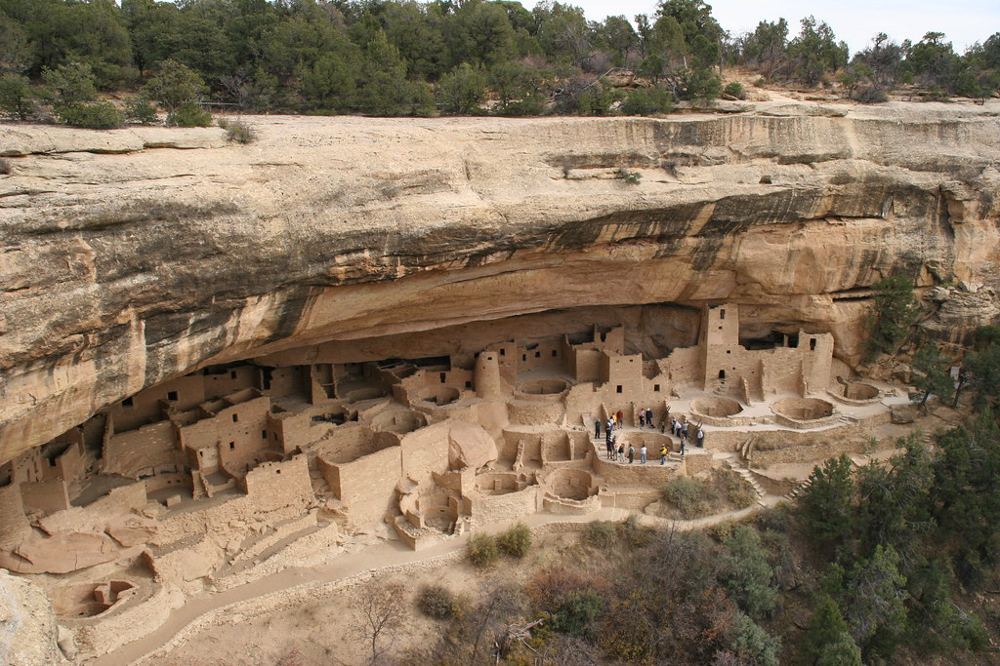

Hikes

Garden of The Gods
Colorado is a beautiful state all year round. However, some of the greatest parts of CO are the most enjoyable in the warmer months of the year. There are many gorgeous places to hike, walk around, or even just drive through and enjoy the nature around you. Garden of the Gods provides a breathtaking view of massive red-rock structures, and makes for a pleasant, short hike. There is also a road conveniently wrapping around the landmark, allowing for faster and easier visits if it's a bit too hot to be outside.

The Rocky Mountains
Stretching up and down most of the west half of the state are the Rocky Mountains. There are countless scenic areas to hike throughout the mountains, and multiple national parks in the mountains with visitor centers informing tourists of the best places to check out. The crystal clear waters of Hanging Lake Park deep in the mountains is one of the many hidden gems of the Rockies.
Mesa Verde
Mesa Verde national park is a must-see park located in the south-west corner of the state, further away from the major cities. The park boasts incredible Ancestral Native American communities carved into the stone cliffs and mesas around the park. Mesa Verde gives visitors an unique look at the heritage of 26 pueblos and tribes.